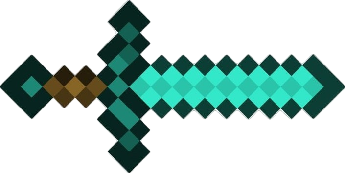

• Descripción: Esta es la dimensión principal en la que los jugadores comienzan el juego. Es un mundo tridimensional lleno de paisajes diversos como bosques, montañas, desiertos, océanos, y más. El Overworld es donde los jugadores construyen, exploran, y interactúan con los mobs y estructuras. Los recursos básicos como madera, minerales, y alimentos se encuentran aquí.
• Características destacadas
o Biomas variados.
o Mobs pasivos, como vacas, cerdos y ovejas.
o Estructuras como aldeas y templos.
o Día y noche, con ciclos de 20 minutos (día/noche 10 minutos cada uno).
• Fuente: Minecraft Wiki - Overworld
• Descripción: El Nether es una dimensión peligrosa, infernal y completamente diferente al Overworld. Está llena de lava, criaturas hostiles como ghasts y blazes, y recursos raros como la Netherite. Para acceder al Nether, los jugadores deben construir un portal utilizando bloques de obsidiana y encenderlo con fuego. El Nether tiene un ambiente extremadamente hostil y es clave para obtener materiales avanzados y para avanzar en el juego.
• Características destacadas:
o Biomas infernales, como la "Cueva Infernal" o el "Bosque Oscuro".
o Mobs hostiles como Blazes, Ghasts, Piglins y Hoglins.
o Recursos como Nether Quartz y Netherite.
o No tiene un ciclo día/noche, siempre está oscuro.
• Fuente: Minecraft Wiki - Nether
.
• Descripción: El End es una dimensión misteriosa y única, famosa por ser el hogar del Ender Dragon, el jefe final del juego. Para acceder a esta dimensión, los jugadores deben encontrar y activar un portal al End, que generalmente está ubicado dentro de una Fortaleza. El End es un lugar vacío, compuesto principalmente por islas flotantes, y está rodeado de un vacío infinito.
• Características destacadas:
o Hogar del Ender Dragon y otras entidades como Shulkers.
o El End está compuesto por islas flotantes que pueden tener estructuras como torres.
o No hay recursos naturales como en el Overworld.
o Una vez derrotado el Ender Dragon, los jugadores pueden regresar al Overworld a través de un portal especial.
• Fuente: Minecraft Wiki - End
Cada una de estas dimensiones ofrece una experiencia única y es fundamental para el progreso y la exploración en Minecraft
.

siguiente